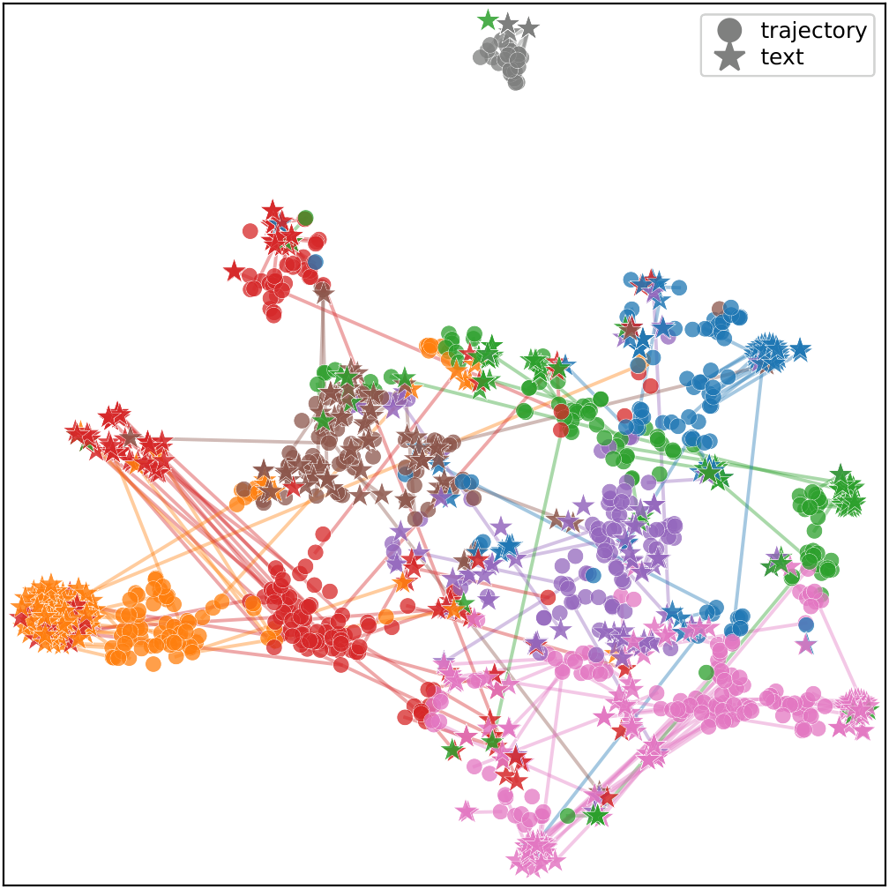
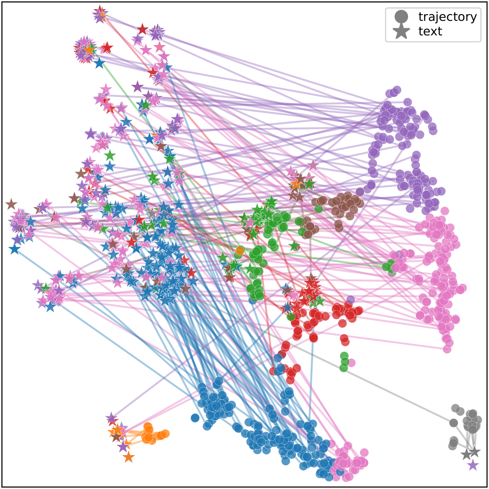
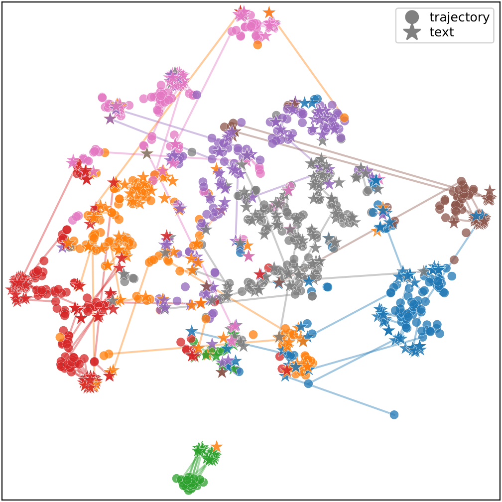
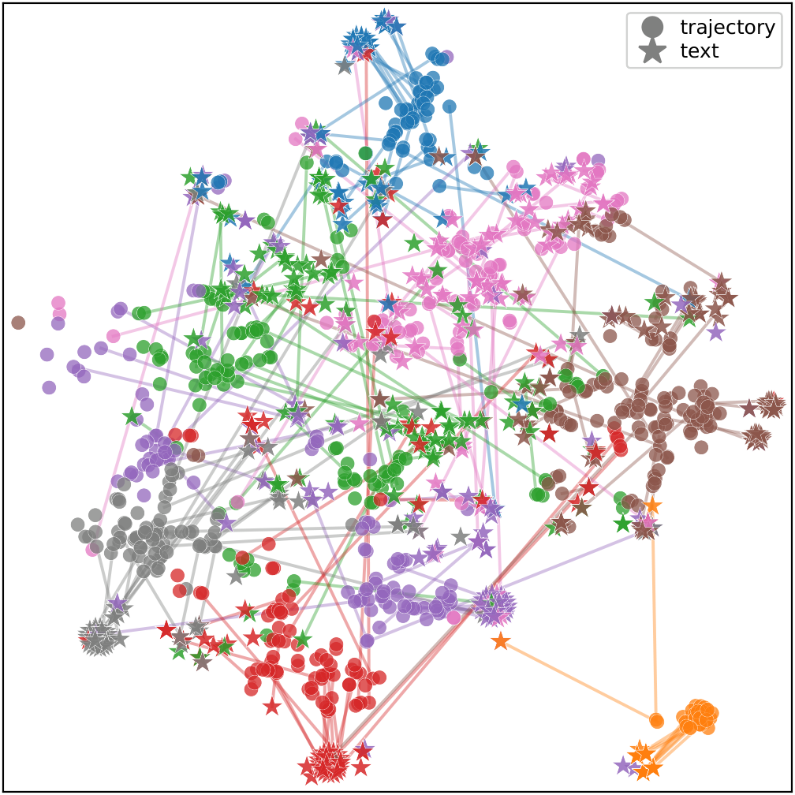
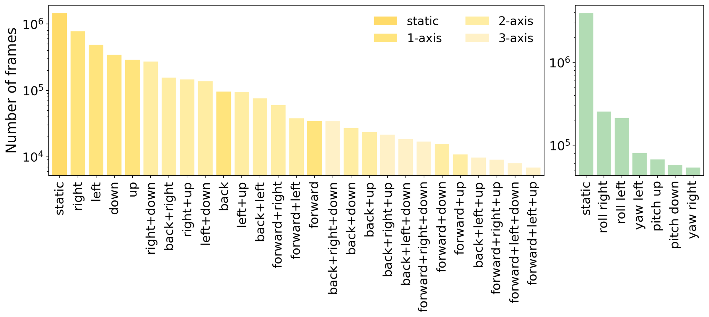
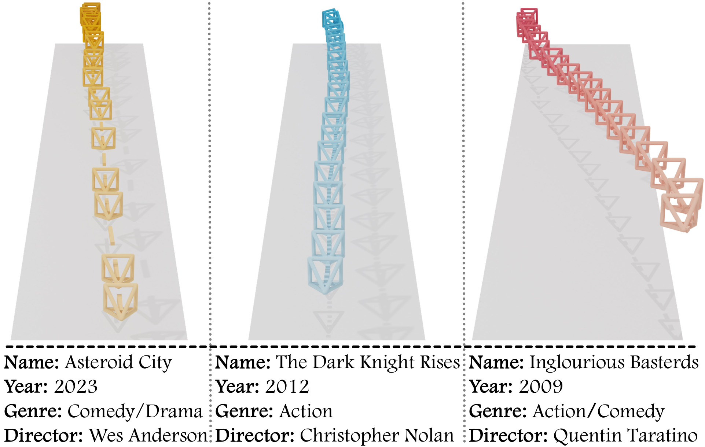
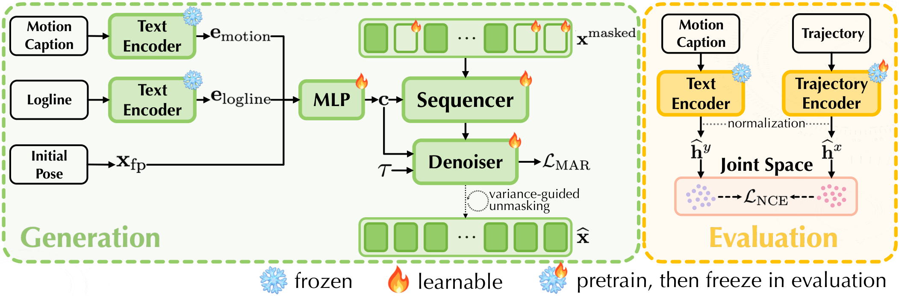
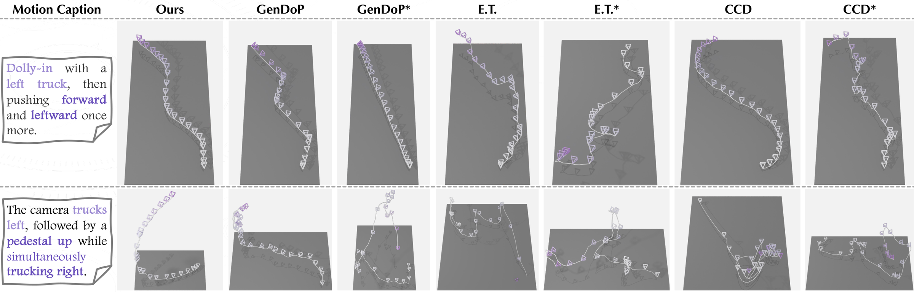
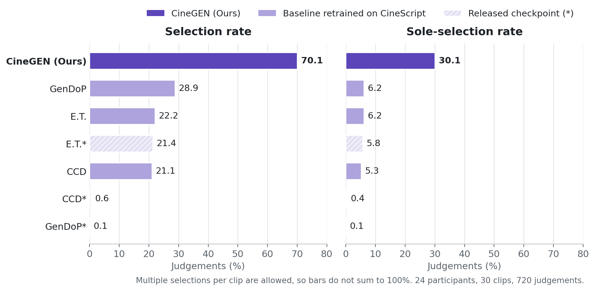

Cinematic camera motion is a fundamental storytelling tool, defined not only by where the camera is positioned in the scene, but also by how it moves in terms of direction and speed. Recent work on camera trajectory generation and alignment to text relies on pose-centric representations. While in principle a network could derive direction of movement and speed, we find that in practice this might not happen. In fact, in this paper we discover that decomposing the camera trajectory representation from the traditional per-frame poses to direction and speed has surprising benefits across multiple tasks, including trajectory-to-text alignment as well as text-to-trajectory generation.
To accurately evaluate the former, we introduce a simple and reliable protocol that overcomes the limitations of prior evaluation baselines. For the latter, building on this representational insight, we propose a novel generative model for camera trajectories, CineGEN, that achieves superior performance across a variety of metrics. We also propose a novel dataset, CineScript, containing movie clips that are enriched with scene descriptions as well as higher-level metadata. This novel data allows us to test models' ability to capture high-level cinematographic information. We show that, despite its simplicity, representing camera trajectories through direction and speed improves alignment and generation while preserving measurable correlations with movie-level attributes.
Human descriptions of camera work say how the camera moves (“gradually dollies in and pans right”), not where it sits in a coordinate frame. Pose-centric representations make a model recover that motion implicitly. DirSpeed makes it explicit: from consecutive poses we take the translational step Δtt and the relative rotation ωt, and split each into a unit direction and a log-speed,
xtds = [ dttr, dtrot, sttr, strot ] ∈ ℝ8.
Normalising isolates the direction of movement from its magnitude, and the logarithm compresses the large dynamic range of real camera speeds. Given the first pose, a DirSpeed sequence integrates back to per-frame poses deterministically.
We evaluate alignment with a lightweight, purely contrastive protocol that drops the reconstruction objective of CLaTr. Under both evaluators, switching the trajectory representation from Pose9D to DirSpeed improves retrieval, and in the joint embedding spaces matched trajectories (•) and captions (★) fall into shared clusters instead of staying apart.

CLaTr · DirSpeed

CLaTr · Pose9D

Ours · DirSpeed

Ours · Pose9D
| Evaluator | Rep. | R@1 ↑ | R@5 ↑ | R@10 ↑ | MedR ↓ | #Params |
|---|---|---|---|---|---|---|
| Ours | DirSpeed | 25.2 | 40.7 | 49.0 | 11 | 3.6 M |
| Pose9D | 17.8 | 26.5 | 31.4 | 51 | 3.6 M | |
| CLaTr | DirSpeed | 19.7 | 30.5 | 39.2 | 23 | 30 M |
| Pose9D | 6.9 | 12.0 | 14.7 | 361 | 30 M |
CineScript contains about 28K movie clips and 10M frames (12.0 s per clip on average), drawn from ShotBench, CineTechBench, MovieShots, CMD and the film subset of VADB and re-processed through one pipeline. Each clip carries a ViPE camera trajectory, a motion caption, and a screenplay-style logline ([INT./EXT.] [Location] – [Time] – [Action]). A subset of 3,163 clips from roughly 1,400 films is linked to real movie metadata: release year, genre and director.

Distribution of translation (yellow) and rotation (green) primitives.

The same coarse motion (a dolly-in) executed differently across movie attributes.
Probes trained only on real trajectories predict era, genre and director above chance, and do so more reliably from DirSpeed than from Pose9D. These are diagnostic probes of latent correlation, not a claim of style control.
| Attribute | #Class | DirSpeed | Pose9D | Δ |
|---|---|---|---|---|
| Era | 3 | 49.8 | 47.3 | +2.6 |
| Genre | 3 | 62.1 | 60.7 | +1.4 |
| Director | 3 | 68.2 | 51.8 | +16.4 |
Macro-F1 (×100) on real validation trajectories.

Diffusion generators such as CCD and E.T. refine every position in parallel, while GenDoP decodes causally in a fixed order. CineGEN is a text-conditioned masked autoregressive model that works directly on continuous DirSpeed tokens: a Transformer sequencer reads the partially masked trajectory, and a small diffusion head samples the missing tokens. Because trajectory features are already low-dimensional, no autoencoder is needed. The model is conditioned on the motion caption, the logline and the first camera pose, and reveals positions in order of contextual confidence, so it commits to the motion progressively while keeping bidirectional context over the whole shot.
We compare with CCD, E.T. and GenDoP, each both as the released checkpoint (∗) and retrained on CineScript in its native formulation. CineGEN is best on every metric; against the strongest retrained baseline it raises R@1 from 0.93 to 3.35 and reduces FCD by nearly 70%.
| Method | Trajectory quality | Text–trajectory alignment | Movie attributes | ||||||
|---|---|---|---|---|---|---|---|---|---|
| F1 ↑ | FCD ↓ | Cov. ↑ | AlignScore ↑ | R@1 ↑ | MedR ↓ | Era ↑ | Genre ↑ | Director ↑ | |
| CCD∗ | 0.117 | 52.45 | 0.298 | 4.90 | 0.08 | 1032.5 | 44.3 | 46.3 | 12.1 |
| CCD | 0.128 | 49.19 | 0.270 | 18.82 | 0.43 | 397.0 | 47.2 | 56.3 | 32.7 |
| E.T.∗ | 0.015 | 135.74 | 0.034 | 0.00 | 0.08 | 960.0 | 40.7 | 56.7 | 25.0 |
| E.T. | 0.194 | 16.39 | 0.596 | 29.78 | 0.81 | 251.0 | 42.0 | 57.5 | 28.1 |
| GenDoP∗ | 0.175 | 102.97 | 0.085 | 7.63 | 0.23 | 715.5 | 33.5 | 45.6 | 18.1 |
| GenDoP | 0.234 | 22.10 | 0.586 | 33.11 | 0.93 | 195.0 | 33.2 | 52.5 | 29.9 |
| CineGEN (Ours) | 0.437 | 6.77 | 0.783 | 57.79 | 3.35 | 52.0 | 47.8 | 60.7 | 48.1 |
∗ released pretrained checkpoint; unmarked baselines are retrained on CineScript.

CineGEN produces smoother, more coherent paths that follow compound instructions. Starred columns are the released checkpoints.
To see the trajectories as camera work, we re-render CameraBench clips with a camera-conditioned video generator. The scene, the renderer, its settings and the seed are fixed; only the trajectory, generated by each method from the same motion caption, changes. In a blinded study with 24 participants (720 judgements), CineGEN was selected as following the reference motion in 70.1% of judgements and was the only version selected in 30.1%, against 28.9% and 6.2% for the strongest baseline.

Each row re-renders the same clip; only the camera trajectory differs. Videos play when scrolled into view.